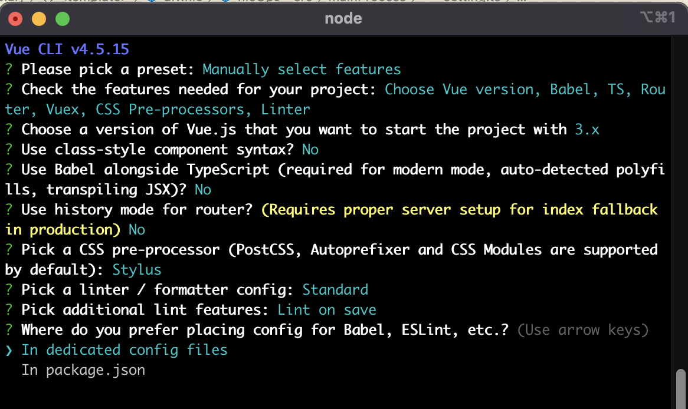
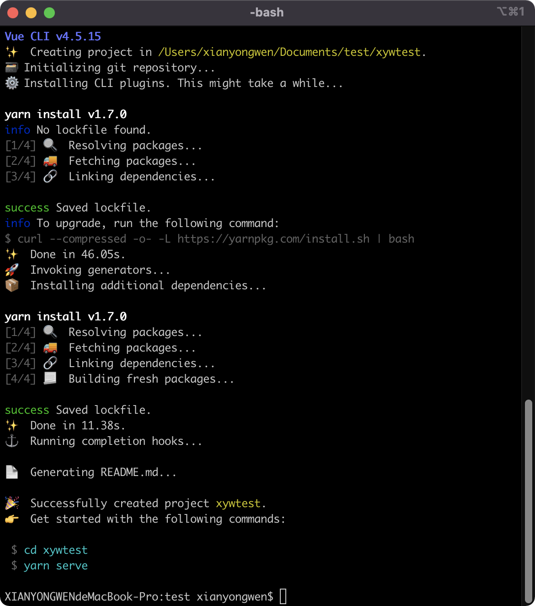
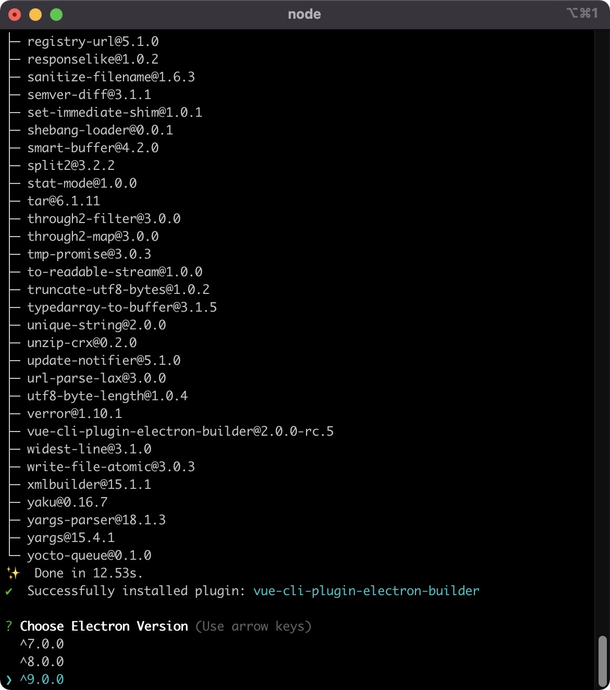
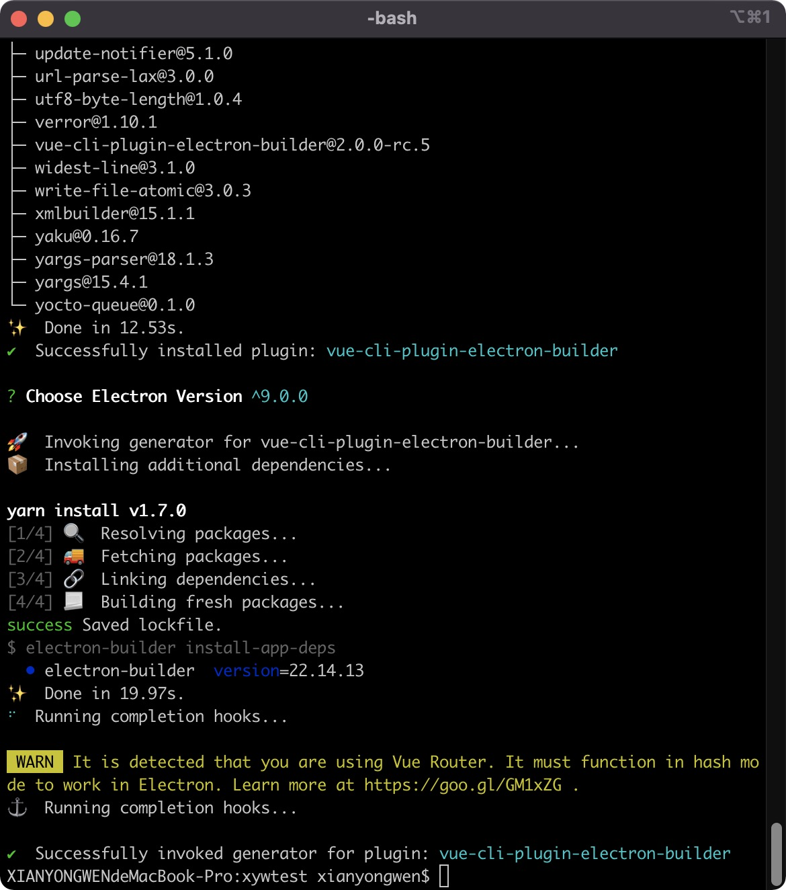
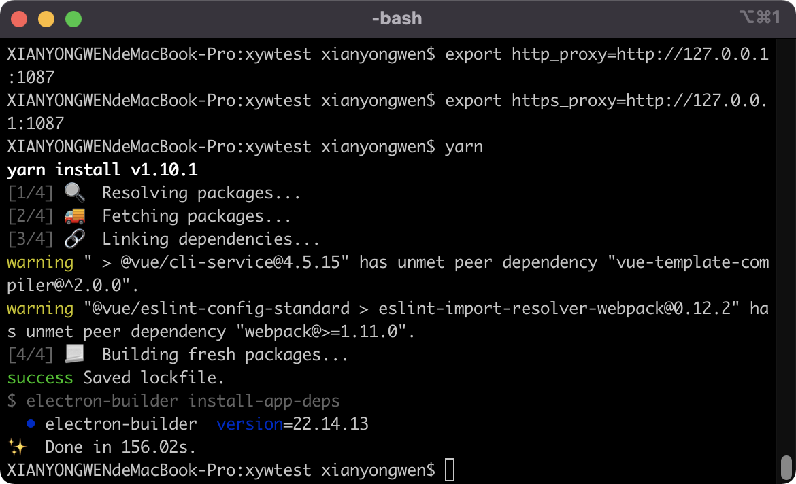
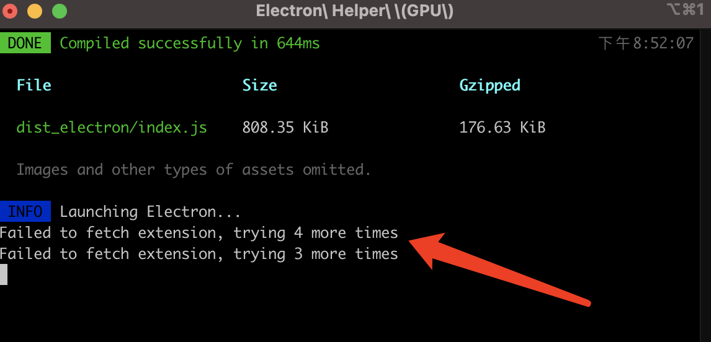
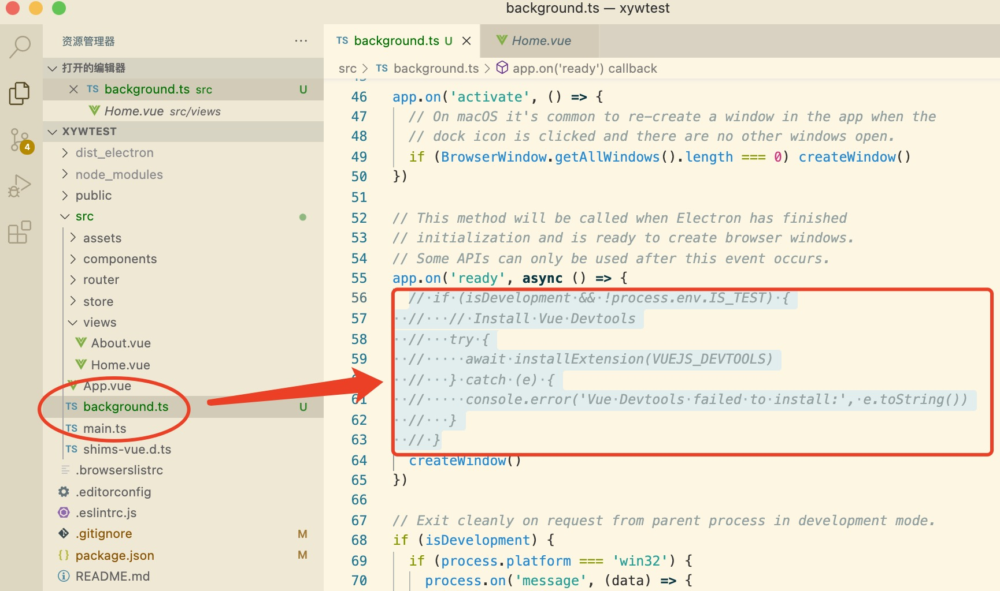
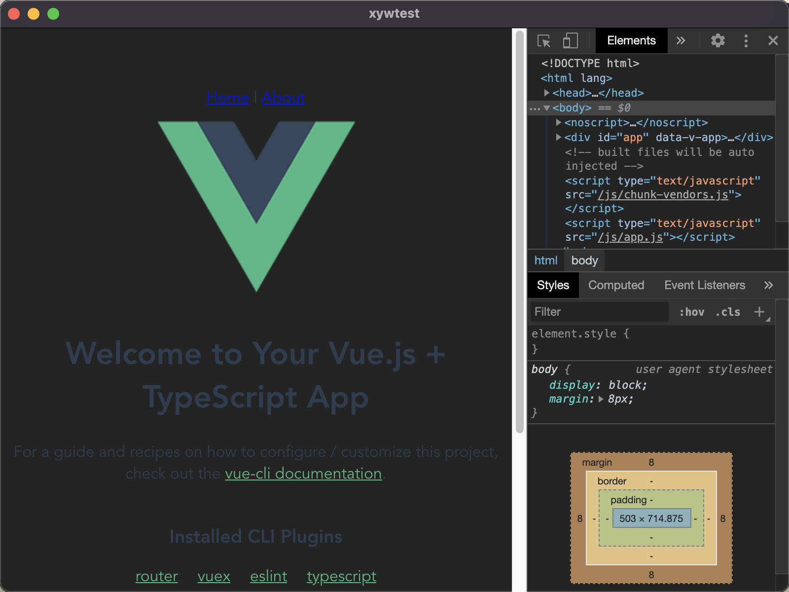
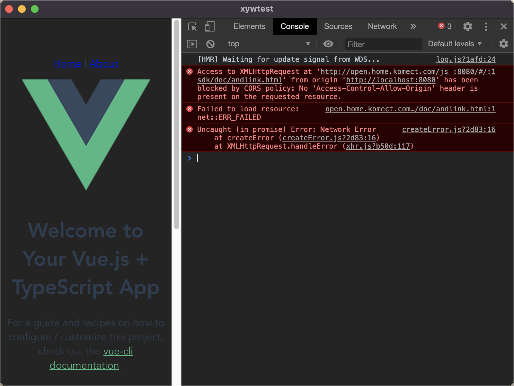
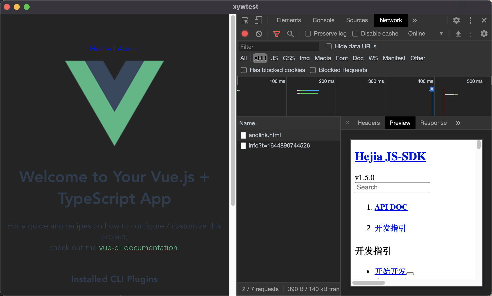

Electron Vue3 Typescript Axios项目搭建
文章目录
引言：老大说，我们需要做一个windows客户端，你可以做吗，可以的话就给你们做，不招windows软件开发了。我看了一下需求，业务功能为主，涉及上传下载文件，对计算性能要求不高，对图像渲染要求不高，electron应该可以应付。因为之前用electron帮女朋友写过一个excel生成工具，帮她应付公司的做表格任务，所以我对electron还是有点了解的。于是我说，我用electron试试吧，还能跨平台呢。
1、前端框架的选型：
由于公司以往的项目都是使用的vue2，而且同事们也是对vue的熟悉程度高于react，所以前端框架选型毫无疑问地选择vue，至于vue2还是vue3呢，这个时候vue3也出了有一段时间了，应该也挺稳定了，用于生产了，而且我们既然用electron，不需要考虑浏览器兼容性，也就是不用管ie了，基于vue3带来的种种好处，就不在这里叙述了，请自行查阅。于是我毫无顾虑地选择了vue3。
2、前端框架与electron的结合：
框架搭建之初，我们需要考虑几个问题：
1、程序如何调试，如何打包
2、静态资源如何引入
3、页面如何切换
4、接口请求是否能成功
如果是单纯的web部署应用，直接vue-cli建立一个工程，使用webpack解决打包问题，页面切换就用vue-router，接口请求基本上也是跟接口部署在同一域名下，不用考虑跨域问题，开发环境的话，使用proxy_table代理就好了。
electron项目，我们就不可能只用浏览器来调试界面，最后用build出一个dist文件夹，丢到electron里替换index.html,然后编译出安装包。这样子不单止调试环境跟实际环境差异很大，而且调试渲染进程与主进程通信和主进程的调试会非常不方便。所以我们最好还是启动electron，然后在里面调试我们的全部代码。
我们知道electron启动的流程大致如下：
electron启动:app.on(ready) -> 创建window:new BrowserWindow() -> 加载页面:loadURL或者loadFile。
对于开发配置，我们需要先启动前端工程，然后在启动electron，electron加载前端开发服务url。
对于生产配置，我们需要先编译前端工程，得到目标文件（dist下文件），然后在启动electron，electron加载前端。
我们需要编写先编译前端，然后再启动electron的脚本。当然前端项目的编译输出与electron的加载前端的页面等都要配置好，生产环境加载前端页面，为了更好地使用vue-router，最好还是使用app://协议。得益于现在vue良好的生态与electron巨大的用户量，这些脚本与配置并不需要我们自己动手去写，我们可以站在巨人的肩旁上，遥望远方。
我们可以选择：
1、electron-vue
2、Vue CLI Plugin Electron Builder
当年我帮女朋友写的excel生成小工具就是基于electron-vue，所以我首先会考虑electron-vue，但是electron-vue已经很久没有更新，而且其生成的工程结构也不适合引入vue3。所以我还是选择了后者。
3、项目搭建过程
工欲善其事，必先利其器，对于搭建electron工程，我们首先需要备好的是梯子，没错，就是翻墙的梯子，否则安装依赖装个两三天也不奇怪。
我们首先使用vue-cli搭建前端工程，具体步骤请参见vue-cli官网文档。
|
|
  建好前端项目后，我们安装Vue CLI Plugin Electron Builder
|
|
 我们选择9.0.0版本  然后我们使用yarn安装依赖包
|
|
 依赖包安装好之后，我们启动项目
|
|
如果遇到下面这种情况，项目启动了很久的话  我们可以把background.ts文件的如下代码注释掉，不安装vue-devtool了
|
|
 项目启动成功 
4、Axios与request的引入
为什么我要同时引入axios与request呢，因为渲染进程必须用axios，主进程必须用request吗？非也。主要是因为我们项目会涉及到文件的上传下载断点续传，主进程使用request对流的控制比较好操作，而更多的业务接口使用promise封装的axios更加方便，所以在我们项目里同时引入了这两个。
首先安装axios
|
|
关于接口发送拦截,授权处理，响应拦截,报错处理这些就不在这里叙述了。
然后我们在Home.vue发个请求测试一下。
|
|
可以看到控制台报错了，请求并没有发出去，这种报错一般就是某种原因被浏览器拦截了，比如跨域  然后我们尝试放开electron跨域限制 webSecurity: false
|
|
重启项目后，可以看到请求已经发送成功了。为什么我发一个http请求而不是一个https的请求呢,因为根据以往搞移动端的经验，有些底座比如ios下的一些webview，对于http的请求会有一些限制，需要额外的设置。所以我直接找个http的接口来测试了。  这里还要说一下的是，比如我司的接口，https用的并非正规机构的SSL证书，而是自签名的证书，也会导致请求发不过去，报证书校验错误，这时就要设置electron绕过证书检查。
|
|
request的安装就不说了，按照一般流程来就可以，这里主要说说接口的token存放与使用吧。一般web应用token放在cookie或者localstorage里，但是electron创建的BrowserWindow里面可以用吗，可以是可以的，但是由于cookie或者localstorage的存放都是以host来存放，所以最好使用loadURL方式来加载前端页面。另外查看electron，有不少issues是关于cookie和localstorage的，如果版本升级，token数据丢失也不是我想要的，所以干脆用nedb来放在用户表里吧，反正我们这个项目是需要用nedb来存上传下载任务列表等数据的,所以nedb是有引入的。然后用的时候拿出来，放在global里，主进程就可以直接用了，渲染进程里使用remote.getGlobal也是可以直接拿来用，不需要通过ipc通信去把token传来传去了。
|
|
文章作者 xianyongwen
上次更新 2020-12-14